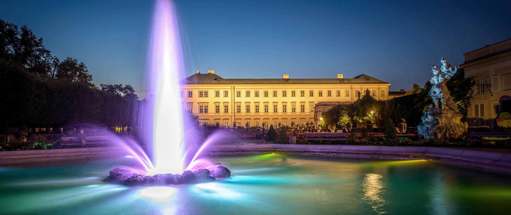

The Mirabell Palace, located in the heart of Salzburg, is a splendid example of Baroque architecture. Built in the early 17th century, it is renowned for its beautiful gardens, grand marble staircase, and ornate sculptures. The palace has served various purposes throughout history, including as a residence for royalty and as a backdrop for important cultural events. Today, it is a popular tourist attraction, offering visitors the chance to explore its elegant interiors and stroll through its manicured gardens. 
Mozart's Birthhouse, located in the historic center of Salzburg, is the birthplace of the famous composer Wolfgang Amadeus Mozart. The house, now a museum, offers visitors insight into Mozart's early life and his family's living conditions during the 18th century. Visitors can explore the various rooms where Mozart and his family lived, see original artifacts and documents related to the composer, and learn about his musical genius and lasting legacy.
Hohensalzburg Fortress is one of the largest and best-preserved medieval castles in Europe. Built in the 11th century, the fortress offers panoramic views of the city and the surrounding Alps. Visitors can explore its fortified walls, towers, and courtyards, as well as visit its museums and exhibitions. Hohensalzburg Fortress is not only a symbol of Salzburg's rich history and heritage, but also a testament to the city's enduring strength and resilience.
Ivrea Castle is a medieval fortress with a rich history dating back to the 10th century. Originally built as a defensive stronghold, the castle has undergone several renovations and expansions over the centuries. Today, it stands as a prominent landmark overlooking the town and serves as a museum and cultural center. Visitors to Ivrea Castle can explore its ancient walls, towers, and dungeons, as well as admire its impressive architecture and panoramic views of the surrounding countryside.
The Ponte Vecchio, or Old Bridge, is a historic bridge spanning the Dora Baltea River in Ivrea, Italy. Dating back to the Middle Ages, the bridge is known for its distinctive arches and picturesque setting. Originally built for pedestrian and equestrian traffic, the Ponte Vecchio has served as a vital link between the two halves of the town for centuries. Today, it is a popular spot for locals and tourists alike to stroll, take in the scenic views, and admire the charming architecture of the surrounding buildings.
The Cathedral of Ivrea, dedicated to Saint Mary of the Assumption, is a stunning example of Romanesque architecture located in the heart of Ivrea, Italy. Built in the 10th century, the cathedral features a magnificent facade adorned with intricate carvings and sculptures, as well as a soaring bell tower that dominates the town's skyline. Inside, visitors can marvel at its ornate interiors, including beautiful frescoes, altars, and stained glass windows. The Cathedral of Ivrea is not only a place of worship but also a symbol of the town's rich religious and cultural heritage.